install.packages("flexdashboard")3 Création de tableau de bord avec flexdashboard
R est un langage de programmation populaire pour l’analyse de données, et il existe plusieurs packages pour créer des tableaux de bord. L’un des packages les plus populaires pour la création de tableaux de bord en R est le package flexdashboard. Dans ce chapitre, nous allons explorer ce package et voir comment créer un tableau de bord à l’aide de flexdashboard. Nous allons également examiner quelques exemples de code pour créer des tableaux de bord interactifs.
Avec flexdashboard, vous pouvez créer tableaux de bords contenant une diversité d’éléments comme :
Des visualisations des données basées sur javascript (par exemple des cartes),
Des graphiques R,
Des tableaux de données (avec ris, filtrage et pagination),
Des boites de valeurs pour mettre en évidence des indicateurs importantes,
Des jauges pour afficher des valeurs sur un compteur,
Et bien plus
Linstallation du package flexdashboard se fait comme celle que tout package R :
3.1 Création d’un tableau de bord flexdashboard
Un tableau de bord flexdashboard est tout simplement un fichier Rmarkdown avec flexdashboard::flex_dashboard comme option de sortie.
---
title: "Untitled"
output:
flexdashboard::flex_dashboard:
orientation: columns
vertical_layout: fill
---Etant donné qu’un fichier flexdashboard est un fichier Rmarkdown, ils se créent donc de la même façon.
Il faut donc aller dans le menu File puis en choisissant New file puis R Markdown…. La boîte de dialogue de la figure XXX s’affiche :
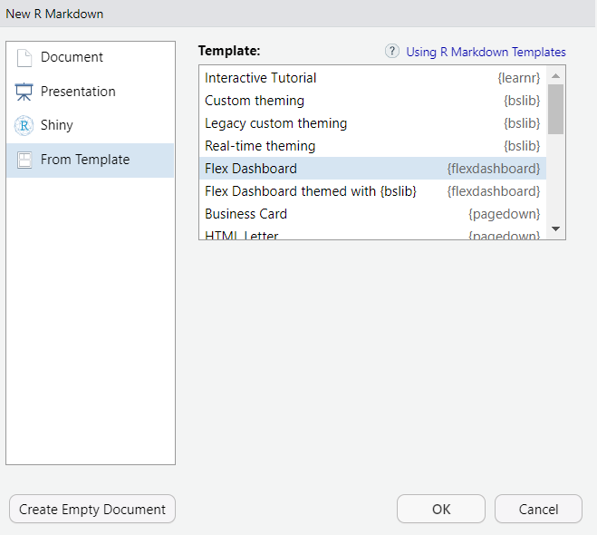
A partir du menu de gauche, cliquez sur From Tamplate et à droite, sur la liste des templates (modèles), choisissez Flex Dashboard. Une fois la sélectionn faite, cliquez sur OK
Cela crée un fichier qui ressemble à celle sur l’image suivante.
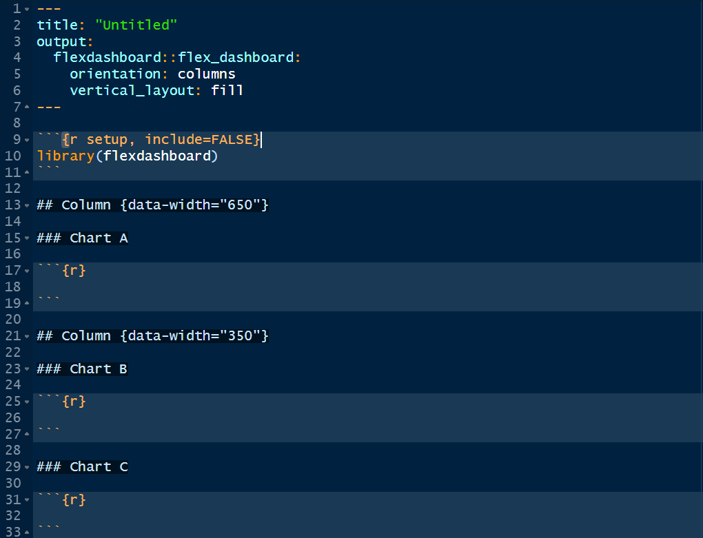
En cliquant sur Knit pour compiler le fichier, nous obtenons un tableau de bord vide.
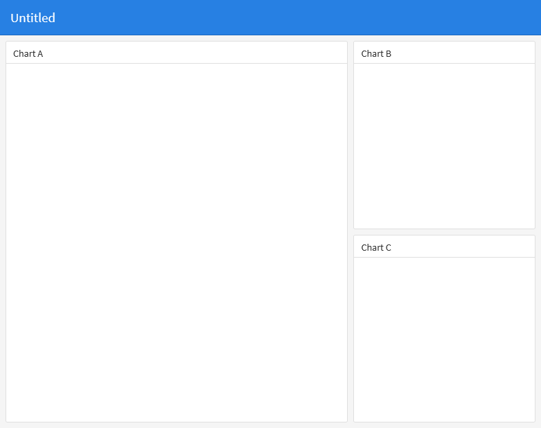
3.2 Disposition des objets
Les éléments dans le tableau de bord peuvent être disposés de différentes façons.
3.2.1 En colonne
L’option par défaut consiste à ranger les éléments en colonnes. Deux colonnes sont créées par défaut, mais d’autres peuvent être ajoutées en utilisant des pointillés. La largeur de chaque colonne peut également être précisée en utilisant l’option data-width, dont la valeur maximale est de 1000.
3.2.2 En ligne
Cette disposition permet de ranger les éléments du tableau de bord par ligne, plutôt que par colonne. Sur chaque ligne, les éléments peuvent être organisés dans des colonnes. En utilisant l’option data-height, la hauteur de chaque ligne peut être ajustée, avec une valeur maximale de 1000. En modifiant orientation: rows dans l’en-tête, nous obtenons un tableau de bord rangé en ligne comme sur l’image XXX.
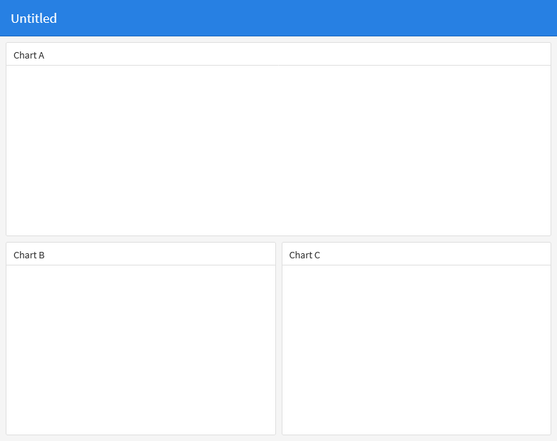
3.2.3 En défilement
Par défaut, les éléments du flexdashboard s’ajustent pour remplir automatiquement la hauteur du navigateur. Ce système convient lorsque vous avez peu d’éléments à afficher à l’écran, mais si vous avez plusieurs éléments tels que des graphiques, des tableaux, etc., vous pouvez préférer une solution permettant de faire défiler les éléments plutôt que de les afficher tous sur une page fixe.
Cela est rendu possible grâce à l’option vertical_layout : scroll dans l’en-tête, qui permet de défiler verticalement entre les différents éléments. Par défaut, cette option est réglée sur fill.
3.2.4 En onglet
Il peut être parfois plus judicieux d’afficher les éléments du tableau de bord sous forme d’onglets, permettant ainsi de naviguer entre les différents onglets pour accéder aux informations. Cette présentation peut être réalisée en utilisant l’option .tabset sur une ligne ou une colonne du tableau.
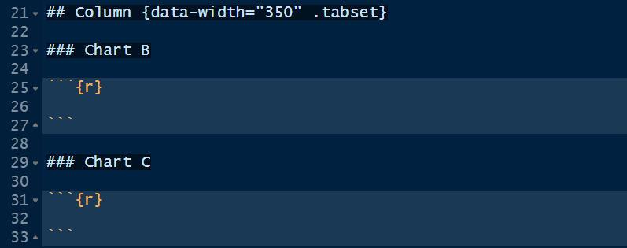
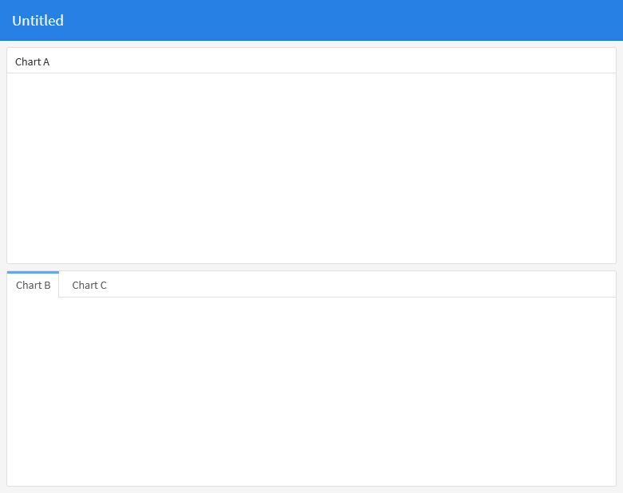
EXERCICES SUR LA MISE EN PAGE
3.3 Composants du tableau de bord
3.3.1 Les composants html widget
sont des visualisations basées sur javascript. Il y a plusieurs mais ici nous ne verrons que deux :
- leaflet : permet de créer des cartes interactives
- Plotly : permet de graphiques dynamiques
library(leaflet)
leaflet() %>%
addTiles() %>%
addMarkers(lat = 15.6, lng = 4.6)3.3.2 Les graphiques R
Les graphiques de base
les graphiques ggplot2
et les autres
Dans la suite, nous allons utiliser les graphiques ggplot2 dont voici un exemple :
library(tidyverse)
iris %>%
ggplot(aes(x = Species, y = Sepal.Length, fill = Species)) +
geom_boxplot(show.legend = F) +
theme_minimal()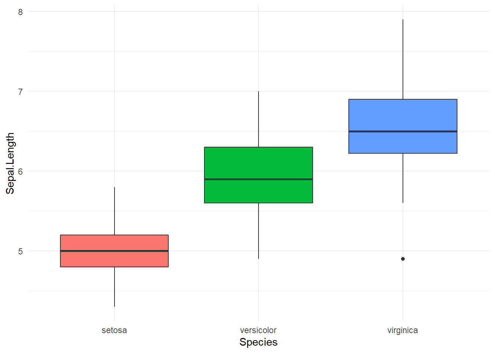
Les différentes techniques de visualisation graphique sont abordées dans notre formation sur la visualisation de données avec R
La taille d’un élément individuel (ex : un graphique) peut être réglée avec fig.width pour la largeur et fig.height pour la hauteur.
3.3.3 Tableau de données
- Simple tableau avec kable : Le tableau simple est idéal pour afficher un tableau de petite taille
head(iris) Sepal.Length Sepal.Width Petal.Length Petal.Width Species
1 5.1 3.5 1.4 0.2 setosa
2 4.9 3.0 1.4 0.2 setosa
3 4.7 3.2 1.3 0.2 setosa
4 4.6 3.1 1.5 0.2 setosa
5 5.0 3.6 1.4 0.2 setosa
6 5.4 3.9 1.7 0.4 setosa- Tableau dynamique avec DT (filtrage) : Idéal pour des grands tableaux
library(DT)
datatable(iris)En intégrant ces différents composants, nous obtenons un tableau de bord ressemblant à l’image XXX
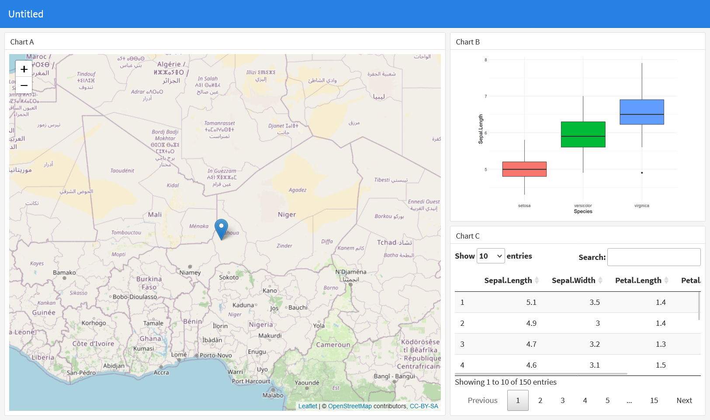
3.3.4 ValueBox
Souvent on a besoin d’inclure dans le tableau de bord la valeur d’un indicateur, accompagé d’un texte et d’une icône. Cela peut être réalisé avec la commande valueBox(). On peut afficher la valeur émanant d’une fonction.
valueBox() a quelques arguments comme :
value: c’est la valeur qui est affichée. Il peut s’gir d’une native ou celle définie par l’utilisateur.color: la couleur. Les différentes couleurs sontprimary(par défaut),info,success. Vous pouvez aussi utiliser les noms de couleur en anglais ou les couleurs CSS valides (ex : #ffffff).icon: l’icone. D’autres icones peuvent être trouvées ici https://fortawesome.github.io/Font-Awesome/icons/
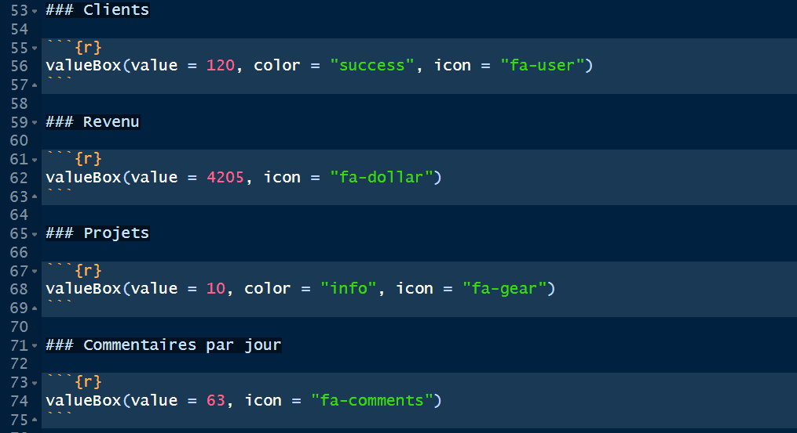
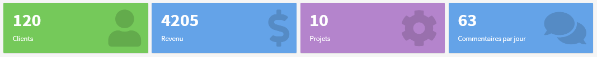
3.3.5 Gauges
Les Gauges permettent d’afficher la valeur d’un indicateur avec en précisant le minimum et le maximum. Une courbe indique la progression de l’indicateur et la couleur correspondante.
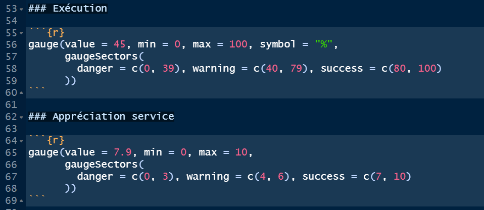
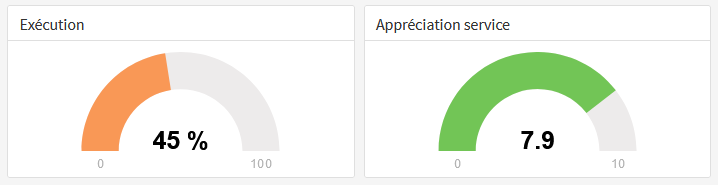
Voici quelques caractéristiques sur les gauges dont il faut savoir :
Il y a trois arguments obligatoires :
valuepour la valeur de l’indicateur,minetmaxpour le minimum et le maximum respectivementUn argument facultatif,
symbolpeut être ajouté pour afficher un symbole à côté de la valeur de l’indicateur.Avec
gaugeSectors(), vous pouvez définir les couleurs selon les intervalles de valeurs de l’indicateur avec les mots “success” “warning”, and “danger”
3.3.7 Titre et notes
Les titres peuvent être précisés avec le symbole ### suivi du nom. Par exemple ### Distribution des ménages
Les notes sont précisées en bas du bloc chunk avec le signe >
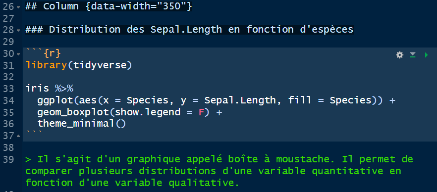
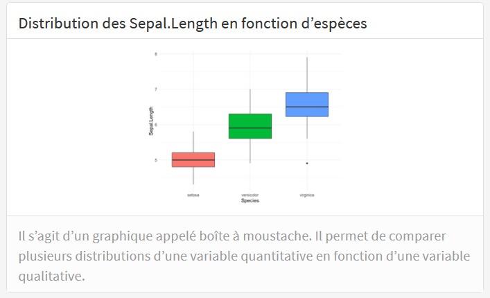
3.4 Page multiple
Lorsque vous avez plusieurs informations à afficher, vous pouvez les répartir entre différentes pages.
Pour définir une page, il suffit de commencer par des signes égale =======================.
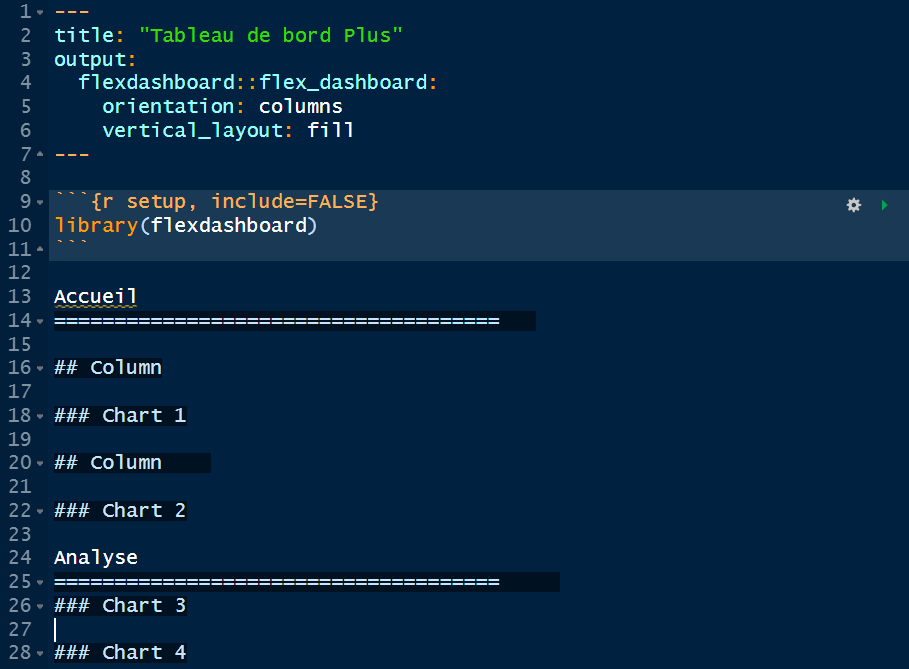
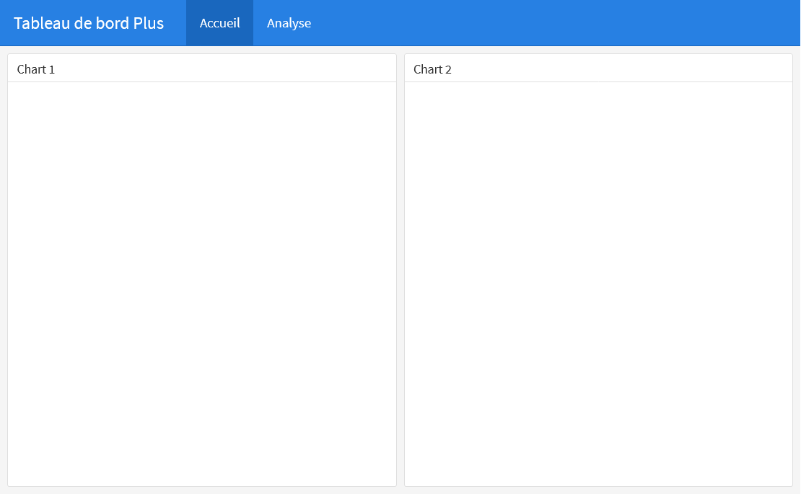
3.4.1 Orientation de la page
Lorsque votre tableau de bord comporte plusieurs pages, vous avez la possibilité de choisir l’orientation de chaque page. Vous pouvez déterminer l’orientation (disposition) grâce à l’option data-orientation qui peut être égale à rows pour indiquer une disposition par ligne.
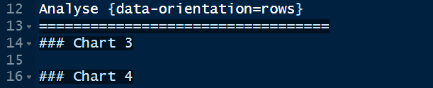
3.5 Storyboards
Les storyboards sont des mises en page interactives qui permettent d’agencer des visualisations de données diverses et d’autres contenus dans une trame narrative. Ils sont particulièrement utiles pour la communication et la présentation des résultats de données et peuvent être personnalisés pour offrir une expérience utilisateur dynamique. Ils sont une alternative à la mise page basée sur les lignes et les colonnes.
3.5.1 Création du storyboard
Pour créer un storyboard, il suffit d’ajouter l’option storyboard: true dans l’entête du tableau de bord.
---
title: "Storyboard"
output:
flexdashboard::flex_dashboard:
storyboard: true
---Ensuite, il faut ajouter un ensemble de composants de tableau de bord de niveau 3 (###). Chaque composant se verra attribuer son écran dans le storyboard avec le titre de la section utilisé comme légende de navigation.
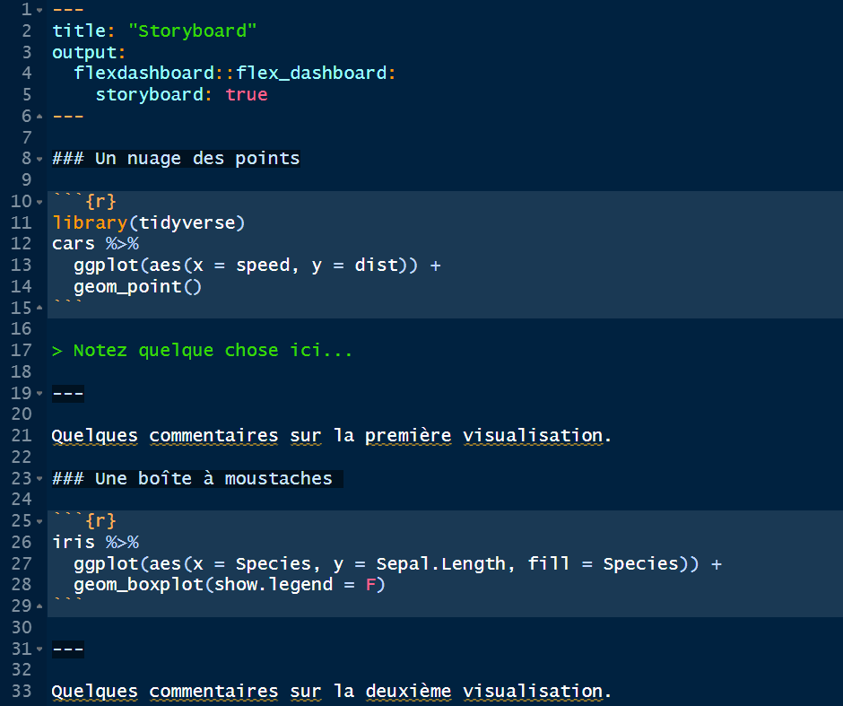
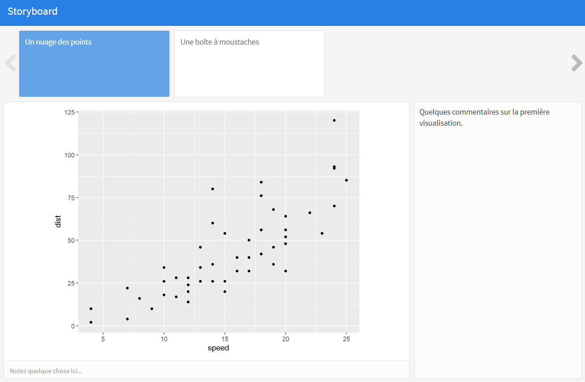
Comme on peut le voir sur l’image, le symbole > permet d’ajouter une note en bas de la visualisation. Des commentaires quand à eux peuvent être ajoutés après le symbole ---. Dans le storyboard, les commentaires apparaitront à droite de chaque visualisation.
3.5.2 Page storyboard
Il est possible de paramétrer une page comme storyboard et d’autres pages avec une autre disposition. Pour cela, il suffit d’indiquer l’option .storyboard dans la déclaration de la page comme suit :
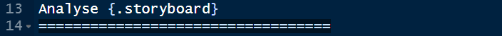
3.6 Themes
Il est possible de modifier l’apparence du tableau de bord en changeant le theme de celui-ci. flexdashboard dispose une grande variété de themes. Par défaut, c’est cosmos qui est choisi. Le thème peut être défini dans l’entête du tableau de bord avec l’option theme: coscos.
Les thèmes disponibles sont les suivants :
cosmo
bootstrap
cerulean
journal
flatly
readable
spacelab
united
lumen
paper
sandstone- simplex
yeti
Les images ci-après montrent l’utilisation des thèmes journal et spacelab.
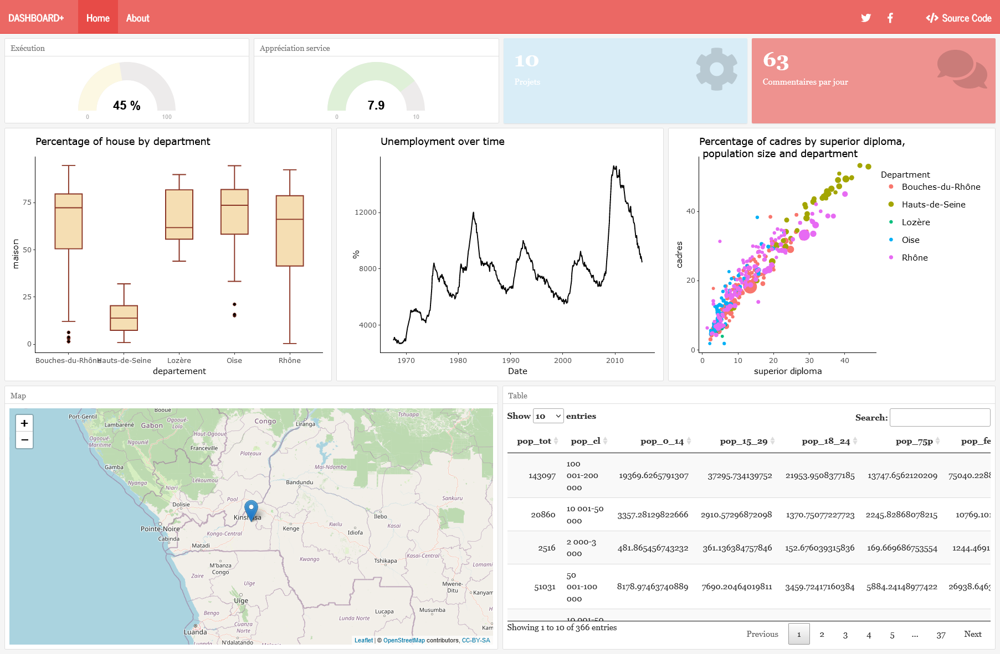
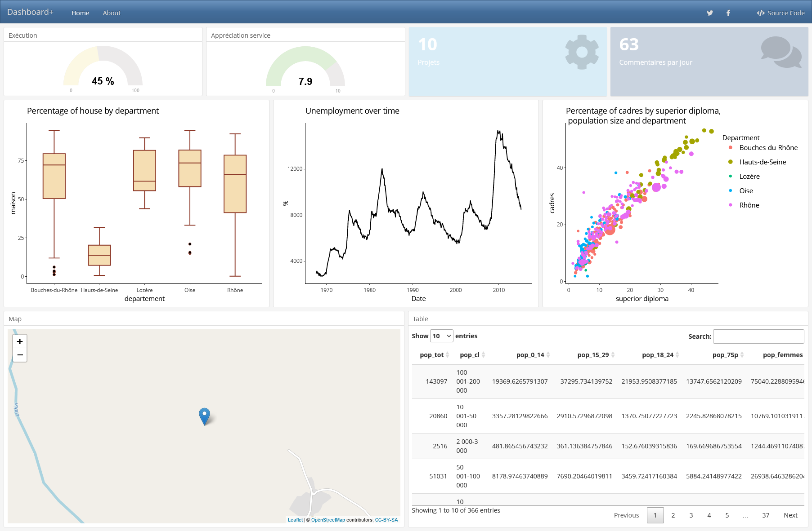